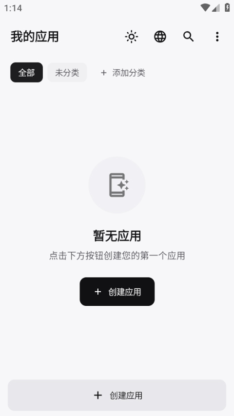

零代码把网页变手机 App？WebToApp 新手五分钟上手
还在纠结怎么把一个网页变成独立的手机应用？WebToApp 让这件事像打包照片一样简单——不用写一行代码，选类型、填链接、点构建，一个属于你的 APK 就出来了。
这篇文章能带你从完全不懂到用起来。不需要任何编程基础，甚至不需要知道 APK 是什么——跟着点就行。
它到底是干嘛的？一个生活化类比讲明白
想象你在奶茶店点了一杯招牌茶饮，觉得好喝想推荐给朋友，但你说不清楚配方。WebToApp官网 就像那个「帮你把配方包装成一个独立包装」的服务员——你只要说「这是我喜欢的网页」或者「这是我拍的一组照片」，它帮你打包成一个能直接装到安卓手机上的独立应用。
这个独立应用就是 APK。安装之后，你的手机桌面上会多一个图标，点进去就是你想分享的内容——可以是一个新闻网站的封装，可以是摄影作品集，也可以是一组旅行照片。
和直接发链接的区别是：它有应用图标，有启动画面，用户安装之后图标一直留在桌面，打开就是全屏浏览，不需要在浏览器地址栏里输网址。
五分钟上手：从下载安装到第一次跑通
先从官方下载把 WebToApp 装上，打开应用之后你会看到一个干净的界面，左边是类型选择器，右边是配置区。新手第一次建议用最简单的「网页」类型——就拿你平时常逛的某个网站练手。
第一步，点类型选择器里的「网页」卡片。你会发现其实不止网页一种——画廊、多站点、单张图片都能打包成独立应用，但先专注把网页类型跑通。
第二步，在基本信息里填三样东西：应用名称（随便起，比如「我的资讯速递」）、应用图标（可以用系统默认，也可以从相册挑一张）、网页地址（比如你常看的某个新闻站点）。

第三步，点右上角那个看起来像播放按钮的「构建」。屏幕上会出现一个进度条——这就是 WebToApp 在帮你把网页编译成 APK。通常几十秒就好了，网站内容复杂可能要一两分钟。
第四步，构建完成会弹出「已导出」提示。点一下就能调起系统的 APK 安装器，确认安装。装完回到桌面，你会看到刚才起的那个应用图标——点开，就是你填的那个网页，全屏，没有浏览器地址栏。
就四步，五分钟，零代码。这就是 WebToApp 的核心用法。
上手后先玩这三个功能
跑通第一个网页应用之后，别只会点网页类型。新手最值得先碰的三个点，每一个都会让你觉得「原来还能这样」。
画廊类型：把照片打包成一个独立相册 App
你拍了一堆旅行照片想发给同行朋友，直接发图太散，做 PDF 又嫌麻烦。画廊类型就是为这个场景准备的。
创建时选择「画廊」卡片，然后选一个图片文件夹，剩下的事情 WebToApp 帮你搞定。你可以选三种布局：网格（规则排列）、瀑布流（高低错落，像 Pinterest）、时间轴（按拍摄日期分组）。
你会看到什么：导出的 APK 打开之后直接进入图片浏览界面，左右滑动切图，双指缩放看细节，甚至支持把单张图片分享出去。桌面上新出现一个应用图标，上面是你的旅行主题。
这意味着什么：你的照片不再躺在微信群聊里被刷走，而是作为一个独立应用，朋友安装之后图标一直留在桌面，想起来就能打开翻一翻。
Hosts 去广告：规则编译进 APK，不需要 root
你可能用过 AdGuard 之类的去广告工具，但那些要么需要 root，要么需要 VPN 通道，要么影响整个系统。WebToApp 的去广告只对你导出的那个 APK 生效。
在应用的通用配置里找到「隐私」卡片，打开 hosts 去广告的总开关。内置了约 20 个主流过滤列表，涵盖广告域名、跟踪器、钓鱼域名、社交网络追踪器——勾选你想要的，保存后重新构建一次 APK 就行。
你会看到什么：新版 APK 运行时，广告请求会在 DNS 层面被拦截，页面直接不加载广告位。不需要安装任何额外工具，不需要 root 权限。
这意味着什么：你给家人打包的新闻网站、你自己做的作品集，可以在构建时就把广告挡在门外。而且每个应用可以独立配置——新闻站点全开去广告，电商封装可能需要放行购物相关的广告。
JS/CSS 模块注入：不改宿主就能给 APK 追加功能
假设你打包了一个网站的 APK，过了几周那个网站改版了，旧样式在 WebView 里显示得乱七八糟。换做是其他工具，你得重新打包、重新分发。但 WebToApp 有个模块市场机制。
在「我的应用」的三点菜单里进模块市场，你可以手动写一段 CSS 覆盖新网站的样式，或者写一段 JS 在页面加载时自动执行某个操作——模块市场能做的远不止这些，WebToApp文档里有完整的模块列表和示例。创建好之后选择目标应用点「安装」，模块会下载到设备上，原 APK 不需要重新构建。
你会看到什么：重新打开 APK，刚才写的样式已经生效，网站显示正常。整个过程不到五分钟，不需要重打包，不需要重新签名，不需要重新分发。
这意味着什么：你的 APK 有了「热更新」能力——网站改版了、想加个自定义功能、想注入分析脚本，都可以在不碰原宿主的情况下快速搞定。
小白的三个常见疑问
Q：APK 会不会很大？装多了占空间吗？
网页类型的 APK 通常在几 MB 到十几 MB 之间，主要是 WebView 内核的大小，实际网页内容是运行时加载的。画廊类型的体积取决于你打包了多少张图片——50 张 2MB 的 JPG 大概会让 APK 变成 120-150MB。如果担心体积，可以用「网页类型 + 远程图片 CDN」的方案，图片放云端，APK 本身很轻。
Q：iOS 用户能装吗？
不能。WebToApp 生成的是标准 APK，只能在安卓设备上安装。iOS 用户如果也想看你的内容，可以用网页类型生成一个轻量 WebView APK 作为中间方案，或者直接把网页链接发给对方用浏览器打开。
Q：我打包的应用更新了，用户那边会自动更新吗？
不会。APK 的更新机制是用户手动安装新版。如果你需要频繁更新内容又不想每次都让用户重装，可以用模块市场的 JS/CSS 注入机制——在不重建宿主 APK 的情况下追加新功能或样式。如果是画廊类型的图片内容更新，目前还是需要重新打包分发。
下一步怎么走
跑通网页类型、玩过画廊、体验过去广告和模块注入之后，你应该对 WebToApp 的能力边界有概念了。进阶方向是试试「多站点」类型——它可以把多个网页或画廊聚合到一个应用里，用标签页切换。比如把一个画廊和一个简单的 HTML 介绍页组合在一起，用户点标签就能在作品展示和作者介绍之间来回切换。
总之，WebToApp 不是什么高深的开发工具，它就是一个帮你把想法快速变成可分享的手机应用的工具箱。上手不难，玩深了也挺有意思。
这套资料在三个仓库都能拿到，GitHub 上有完整的文档目录，国内访问速度慢的朋友可以直接去 Gitee 或 GitCode 查同名仓库，内容是同步更新的。